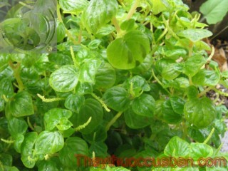

Tên khác
Tên thường gọi: Rau càng cua còn có tên là đơn kim, đơn buốt, cúc áo, quỷ châm thảo, thích châm thảo, tiểu quỷ châm, cương hoa thảo...
Tên khoa học: - Peperomia pellucida (L.) Kumb (Piper pellucida L.)
Bộ: Bộ Hồ Tiêu (Piperales)
Chi: Chi Peperomia
Loài: Loài P. Pellucida
Họ khoa học: thuộc họ Hồ tiêu - Piperaceae.
Cây càng cua
(Mô tả, hình ảnh cây càng cua, phân bố, thu hái, thành phần hóa học, tác dụng dược lý...)
Mô tả:

Bộ phận dùng:
Toàn cây - Herba Peperomiae Pellucidae.
Nơi sống và thu hái:
Gốc ở Nam Mỹ, nay được trồng và phát tán rộng rãi trở thành cây mọc hoang ở nhiều địa phương trên cả nước
Thành phần hóa học:
Rau càng cua là loại rau giàu dinh dưỡng, đặc biệt beta-caroten (tiền vitamin A), rau chứa nhiều chất sắt, kali, magiê[1]... còn chứa nhiều chất vitamin C, carotenoid. Trong 100g rau càng cua chứa 92% nước, phosphor 34 mg, kali 277 mg, canxi 224 mg, magiê 62 mg, sắt 3,2 mg carotenoid 4.166 UI, vitamin C 5,2 mg, cung cấp cho cơ thể 24 calori
Tác dụng dược lý
Trong rau chứa nhiều chất sắt, giúp bổ sung cho người thiếu máu do thiếu sắt.
Các chất kali, magiê trong rau tốt cho tim mạch và huyết áp cũng như góp phần trong việc chữa bệnh đái tháo đường, táo bón, cao huyết áp...
Vị thuốc càng cua
(Công dụng, liều dùng, tính vị, quy kinh...)
Tính vị:
Rau có vị mặn, ngọt, chua, lẫn giòn, dai
Theo Đông y, rau càng cua vị đắng, tính bình.
Tác dụng: tán ứ chỉ thống
Rau có tác dụng thanh nhiệt, giải độc, hoạt huyết, tan máu ứ, thường dùng để chữa các bệnh nhiễm trùng đường hô hấp, viêm ruột thừa, viêm gan, viêm dạ dày - ruột, tiêu hóa kém. Ngoài ra rau còn được dùng ngoài chữa rắn cắn, nhọt lở, chấn thương sưng đau, có tác dụng chữa trị bệnh ngoài da rất tốt, nhất là bệnh ghẻ lở (giã nát, vắt lấy nước, bổ sung chút muối và chấm vào vết thương, da sẽ mau lành, liền miệng)
Ngoài ra nó còn được dùng ngoài chữa rắn cắn, nhọt lở, chấn thương sưng đau.
Do có tính sinh tân, giải nhiệt, nhiều chất bổ, vị hơi chua chua và mọng nước, rau càng cua có tác dụng giải khát tuyệt vời; có tác dụng chữa trị bệnh ngoài da rất tốt, nhất là bệnh ghẻ lở, giã nát, vắt lấy nước, bổ sung chút muối và chấm vào vết thương là da sẽ mau lành, liền miệng.
Ở Java, người ta nghiền lá ra dùng đắp trị sốt rét, đau đầu. Dịch lá dùng uống trị đau bụng.
Ở Trung Quốc toàn cây được dùng làm thuốc đòn ngã và trị bỏng lửa, bỏng nước, ung sang thũng độc.
Liều dùng:
Nhân dân thường dùng toàn cây bỏ rễ làm rau ăn sống, cũng thường dùng nấu canh.
Liều dùng không cố định
Ứng dụng lâm sàng của rau càng cua
Chữa viêm họng:
Rau càng cua 50 - 100g, rửa sạch nhai ngậm, hoặc xay nước uống hàng ngày. Dùng liền 3-5 ngày
Chữa tiểu đường:
Rau càng cua 100g rửa sạch bóp giấm (có thể dùng chanh), ếch 1 con (100g), lột da, làm sạch bỏ đầu, lấy thịt tẩm bột, rán chín vàng. Tất cả trộn đều, ăn tuần 2-3 lần
Thiếu máu:
Rau càng cua 100g rửa sạch bóp giấm, thịt bò 100g, cho gia vị vừa đủ xào chín tới trộn đều ăn, nóng với cơm. Một tuần ăn 3 lần.
Lợi tiểu:
Rau càng cua 150-200g, rửa sạch, cho 300ml nước đun sôi , chia 2 lần uống trong ngày. Uống liền 5 ngày.
Chữa đau lưng cơ co rút (nhiệt độc nhập kinh thận):
Rau càng cua sắc uống mỗi ngày 50 - 100g.
Chín mé (sưng tấy, chưa vỡ mủ):
Rau càng cua 100 - 150g, cho 250ml nước, đun sôi chia 2 lần uống trong ngày. Bã đắp ngoài.
Mụn nhọt:
Rau càng cua 150g, rửa sạch ăn sống, hoặc xay nước uống.
Chữa ngoài da khô sần, mụn nhọt lở ngứa, vết thương lâu lành:
Rau càng cua ăn sống, hoặc xay nước uống, giã đắp ngoài.
Tham khảo
Rau càng cua được dùng làm vị thuốc, giúp bổ sung cho người thiếu máu do thiếu sắt.
Rau ít năng lượng, thích hợp cho người giảm cân.
Tốt cho người bị bệnh đái tháo đường, táo bón, cao huyết áp...
Kiêng kị:
Người tỳ vị hư hàn đang tiêu chảy không nên dùng.
Sỏi thận không nên dùng rau càng cua
Món ăn từ rau càng cua
Làm các món ăn như: rau sống, trộn dầu giấn, trộn gỏi, nấu canh...
RAU CÀNG CUA TRỘN THỊT BÒ:
Nguyên liệu: 300g thịt bò + 400g rau càng cua + 2 trái cà chua + 2 muỗng cà phê tỏi băm + 1/2 củ hành tây + Muối, hạt nêm, tiêu, dầu ăn.
Cho 2 muỗng canh giấm + 1 muỗng cà phê nước cốt chanh + 1 muỗng canh dầu ăn + 1/4 muỗng cà phê muối + 1/2 muỗng cà phê tiêu + 2 muỗng cà phê đường vào chén, khuấy tan đều.
Thịt bò rửa sạch, xắt mỏng, ướp với ít muối, hạt nêm, tiêu, dầu ăn và 1 muỗng cà phê tỏi băm. Rau càng cua ngắt bỏ hoa, nhặt sạch, rửa sạch, để ráo. Cà chua cắt múi. Hành tây lột vỏ, cắt khoanh tròn, ngâm nước giấm đường. Phi tỏi thơm băm còn lại vào với dầu ăn, trút thịt bò vào đảo nhanh tay cho thịt chín tái.
Cho thịt bò, rau càng cua, cà chua, hành tây vào tô, rưới nước trộn vào, trộn đều.
CANH RAU CÀNG CUA NẤU NẤM:
Nguyên liệu: 100g thịt nạc heo + 300g rau càng cua + 50g nấm rơm + 50g nấm kim châm + 2 muỗng cà phê hạt nêm + 1 muỗng cà phê tỏi băm + 2 muỗng cà phê dầu ăn + 1/4 muỗng cà phê tiêu
Thịt nạc heo băm nhuyễn, ướp với ít hạt nêm. Rau càng cua ngắt bỏ hoa, nhặt sạch, rửa sạch. Nấm rơm, nấm kim châm ngâm nước muối loãng 5 phút, cắt bỏ gốc, rửa sạch, nấm rơm cắt đôi hoặc cắt 3. Phi thơm tỏi băm với dầu ăn, cho thịt bằm và nấm vào xào sơ, đổ 700ml nước vào nấu sôi, nêm vừa ăn. Khi nước sôi cho rau càng cua vào, đảo nhẹ, tắt bếp. Múc ra tô, rắc tiêu.
Càng cua là vị thuốc nam quý, được sử dụng rộng rãi làm rau ăn, rau thơm cũng như trong YHCT. Khách hàng có thể tìm mua loại rau vị thuốc này tại các chợ ở địa phương.
Tag: cay cang cua, vi thuoc cang cua, cong dung cang cua, Hinh anh cay cang cua, Tac dung cang cua, Thuoc nam
Thaythuoccuaban.com Tổng hợp
*************************